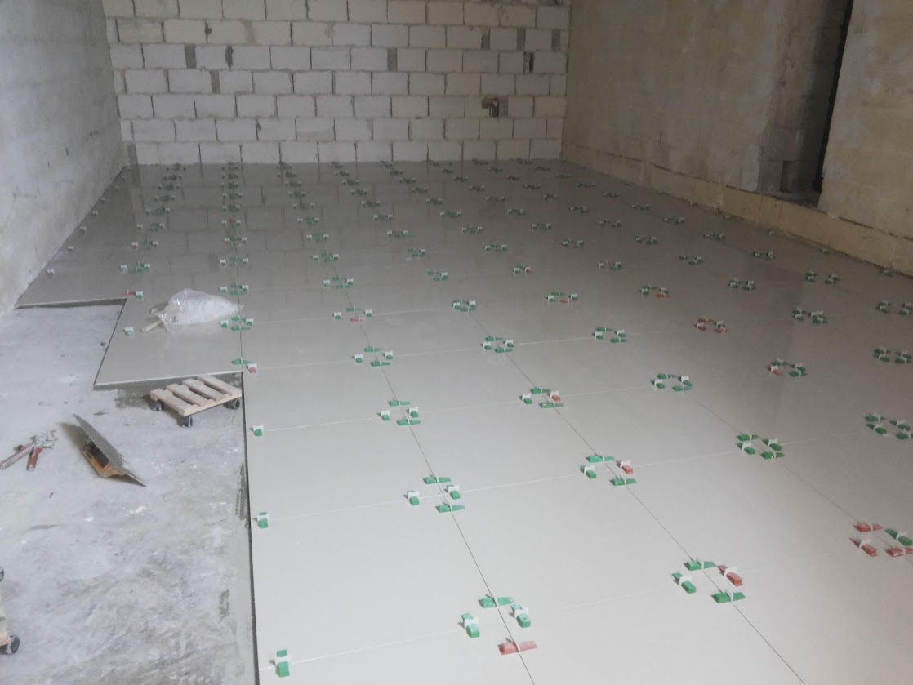
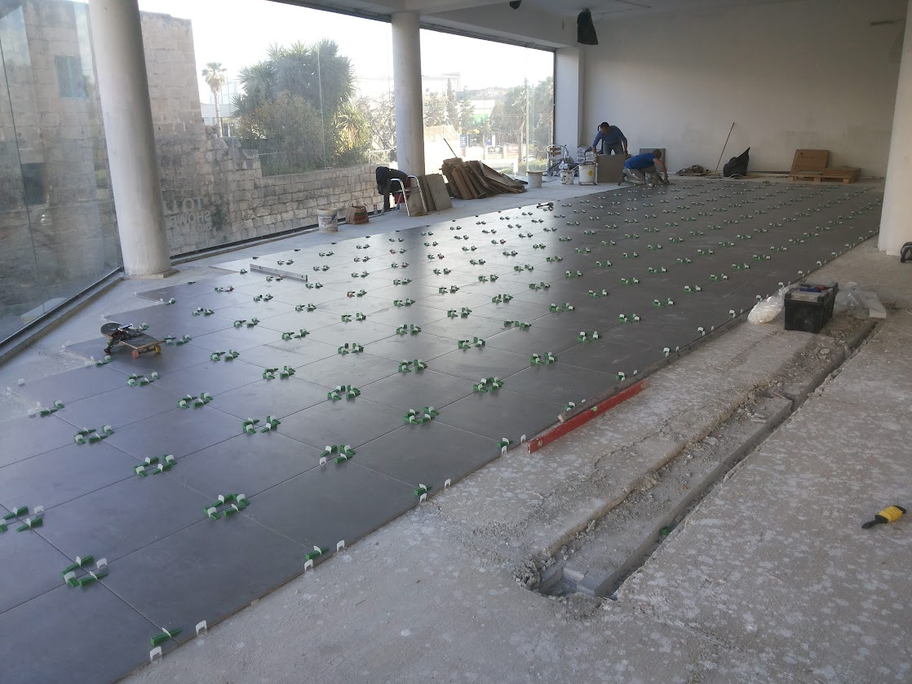
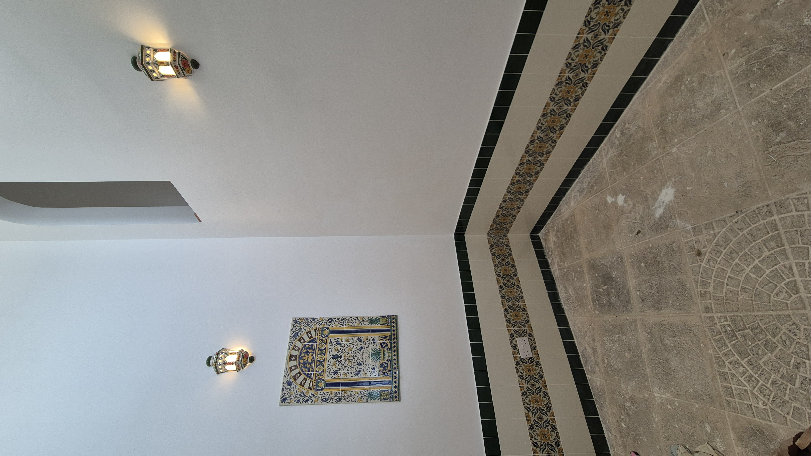
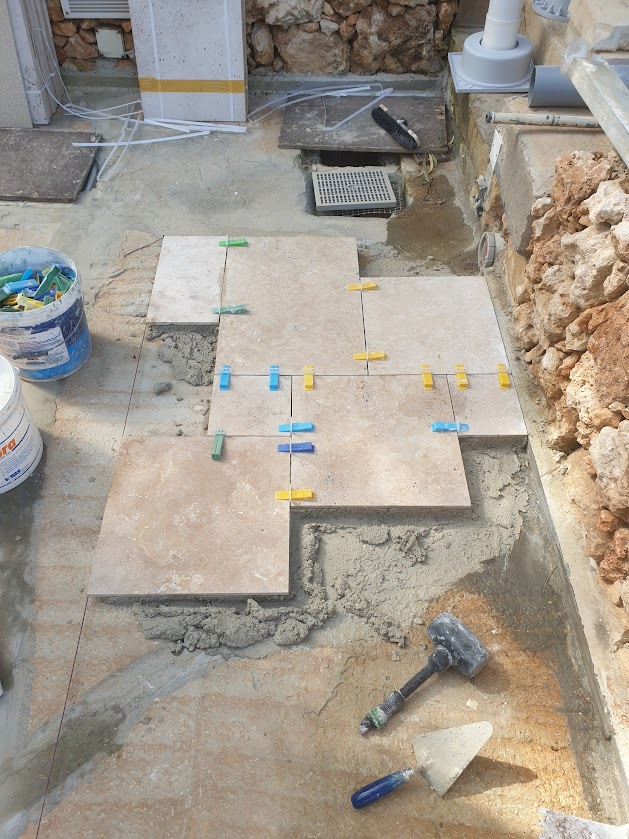
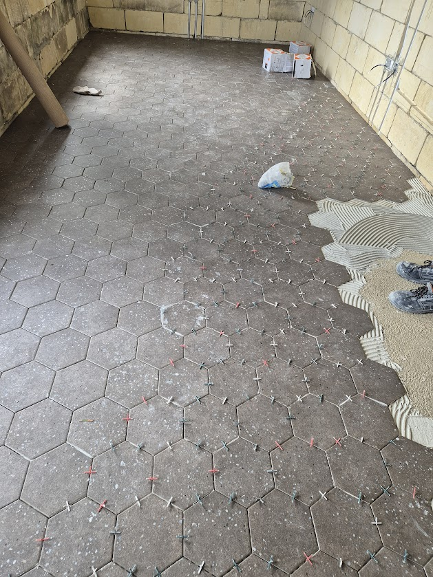

Expert Tiling Services in Malta
Tiling is one of the most visible elements of any finished space — it defines the character of bathrooms, kitchens, terraces and living areas. Our experienced tilers handle all tile types and formats, from small mosaic tiles to large 120x120cm slabs, with precise cutting and perfectly aligned joints. We work across all of Malta including Sliema, Naxxar, Mosta, Mellieha, Attard and St. Paul's Bay.
We take tiling seriously, starting with a proper substrate assessment and waterproofing where required, ensuring tiles bond correctly and stay in place for years to come.





What Our Tiling Service Includes
- Floor and wall tiling in bathrooms, kitchens and living areas
- Large-format slab installation (up to 120x120cm and larger)
- Mosaic and feature tile installation
- External terrace and balcony tiling
- Swimming pool tiling (see Pool Finishing service)
- Tile layout planning and pattern design
- Precise tile cutting with wet saws and angle grinders
- Grouting and joint sealing
- Tile trim and edge finishing
Materials We Use
- Flexible tile adhesive (C2 class for large format and wet areas)
- Epoxy grout for wet areas and pools
- Standard cement grout for dry areas
- Tile spacers and levelling clip systems for large format
- Schlüter and aluminium tile trim profiles
- Silicone sealant for movement joints and wet area corners
Why It Matters
Poor tiling leads to hollow tiles, cracked grout joints and eventual water ingress behind surfaces. Our tilers assess the substrate, select the correct adhesive and apply tiles with the right technique — whether that's back-buttering large slabs or using a levelling system to eliminate lippage on high-visibility floors.